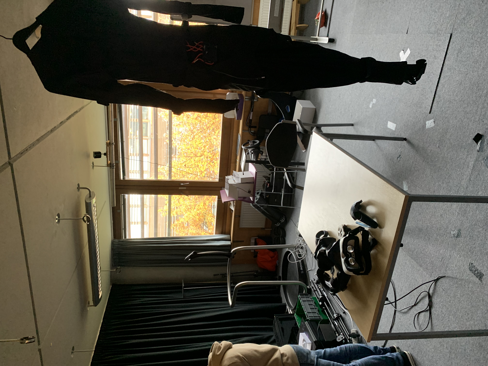
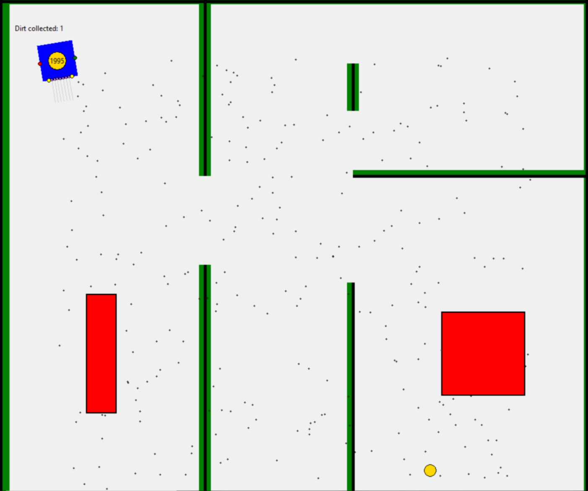
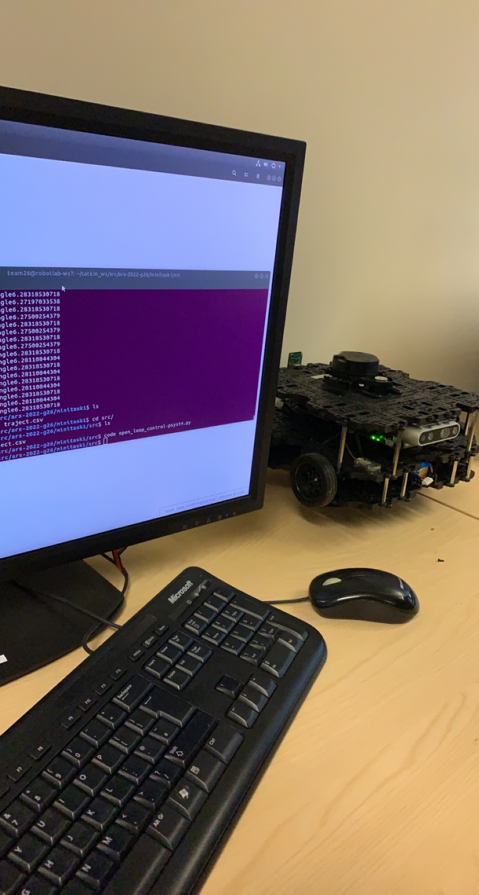
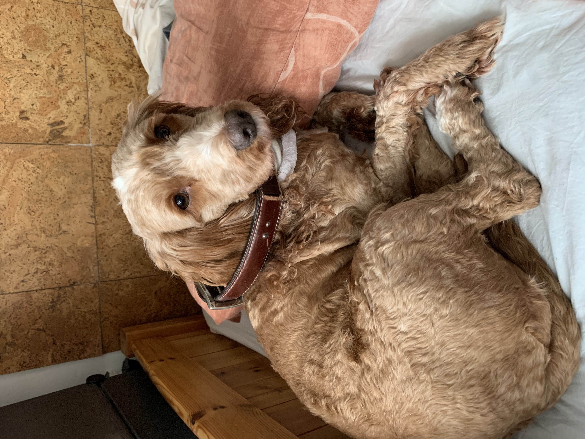
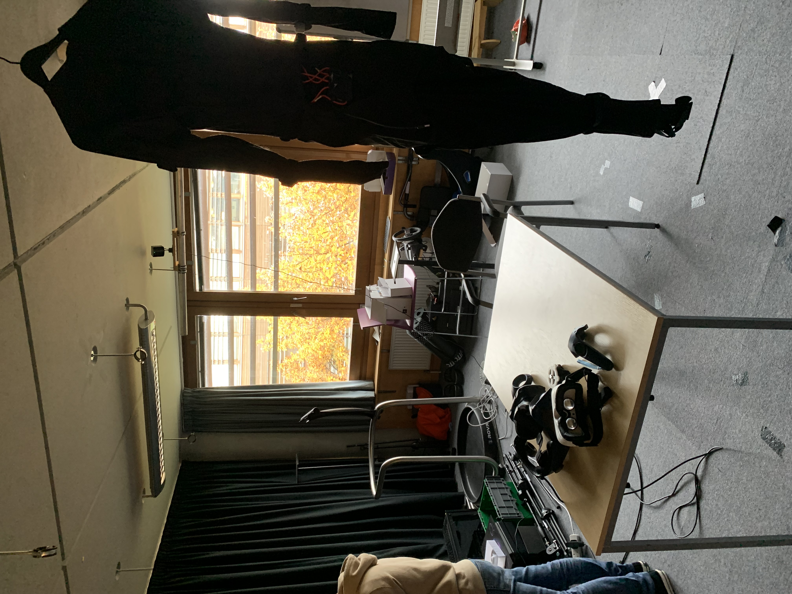
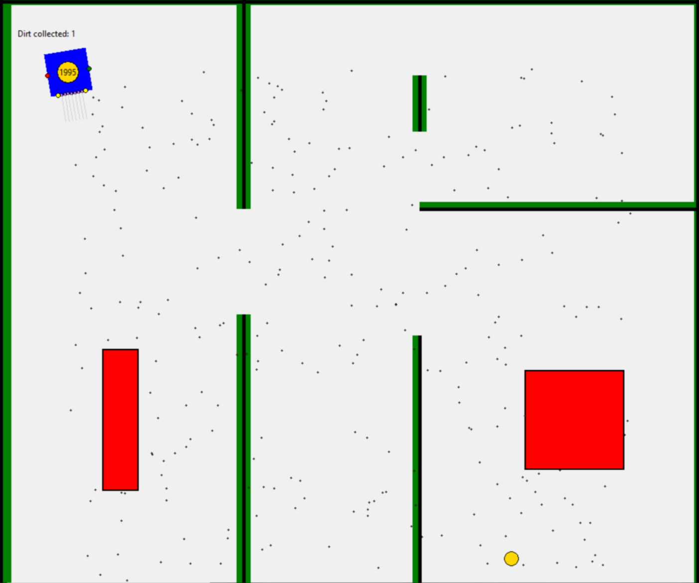
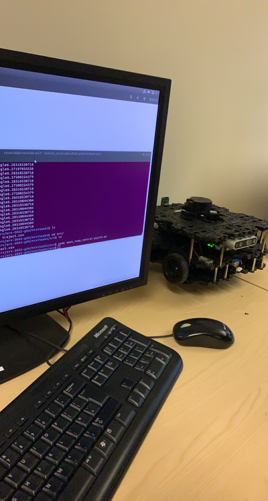
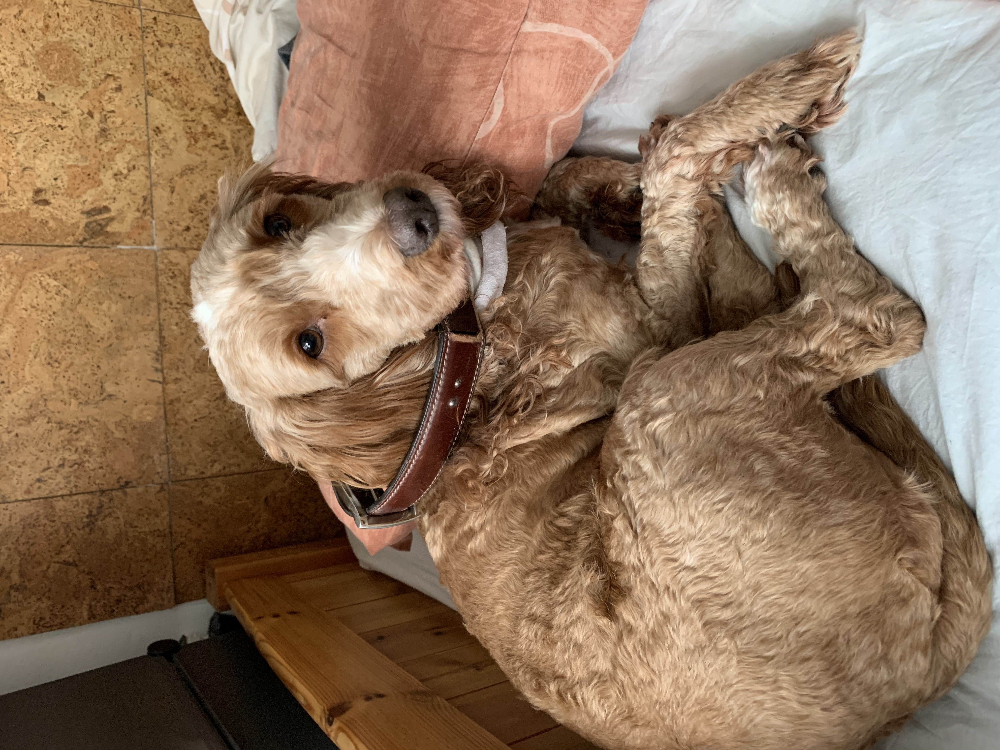

Projects
Data Science & AI
Unity & VR
Object-Orientated Programming
Robotics
Cyber Security & Ethics
Imperial College Projects
- Malignant/Benign tumor detection using machine learning
Utilizing various machine learning techniques and libraries my team and I developed a model capable of diagnosing the nature of breast cancer tumors through data gathered from image screening. - Exploration, analysis and visualization of nutritional content of menu
Using Starbucks's macro-nutritional dataset I explored various trends and expressed them through the use of interactive visualization. Developed in R. - Memetic Algorithm for solving the knapsack problem
I developed a multi-memetic AI algorithm tasked at solving the knapsack problem, built using Java and an API developed by the University of Nottingham.
- VR Ice Skating mixed reality experience
A mixed/virtual reality experience designed using a ROVR treadmill for omnidirectional movement, sensor fans for imitation of wind resistance and live sounds and a working prototype developed in Unity VR for a Oculus Quest 2 headset - VR educational game about the magistrate court system
A year long group project; the user would be punished accordingly to the crime they choose or choose not to commit and then would experience a trial in a magistrates court. This project was developed in Unity VR and for the Oculus quest 2 headset.
- Improvement of code and UI and addition of functionality to game Breakout
Following industry coding conventions, I fixed and improved the readability and extendability of the code through the use of code design patterns; better organized the class hierarchy; improved user interface using Java Swing and Java Fx; implemented main menu, scoreboard and extra mechanics to the game. - Recreation of the game Othello
Developed in Java, the UI was developed using Java Swing and Java FX and the logic was also written in Java. This project also focused on the use of UML to explain design decisions and XML. - Online multiplayer puzzle game built using test-driven development
A group project with the focus of familiarizing ourselves with industry standards of software development. We developed a 3D online escape-room type game using Unity whilst following ISO 9000 standards, test-driven development, industry project development methodologies and automation testing. Developed in Unity.
- Comparison hyperparameter of a robot vacuum cleaner through simulation
A simulation of a robot vacuum cleaner tasked with collecting dirt in a room. The intelligent agent and environment was visualized using the Tk GUI library. The focus was to compare two features, first being the hyperparameter of the lidar the robot used to avoid obstacle, the other being the pathfinder algorithm used such as A* and Dijkstra. This project was developed in Java. - Autonomous Robot
Fully autonomous robot vacuum cleaner capable of navigation and localization using SLAM, object detection using computer vision, and collision avoidance using lidar developed for a ROS waffle bot. The project was tested both physically and virtually using an environment designed in Gazebo.
- Penetration testing of server with weak security and fixing its flaws
Using software such as metasploit and nmap, this project focused on familiarizing yourself with such software and identifying the security flaws of a database. Furthermore it included tasks such as creating strong and robust password policies and implementing changes to the database to make it more secure.
- Imperial Maker Challenge
Lead by Imperial College London this course focused on design thinking (prototyping), 3D printing, laser cutting, electronics, CAD and coding. For my product I designed and created a works-like and looks-like prototype of a health monitoring dog collar inspired by FitBit which would record and display roughly the amount of calories the dog has burnt and the amount of steps it took through the use of an accelerometer and gyroscope. - Imperial Gold Crest Award
A group research project on a randomly assigned field which later was presented at Imperial Collage London. Me and my team where assigned the field of biomechanics from which we wrote the paper titled: "The biomechanics of Computer gaming". To conduct our research we had frequent meeting with our mentor who was a PHD student of biomechanics and used observation through labeling and recording the movement of different hand joins affected by the ergonomics of the mouse as well as the style of grip.